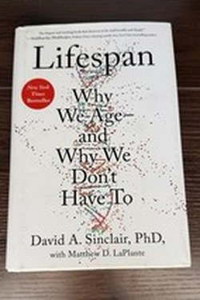

Library › Self-Improvement
Lifespan — Summary & Key Lessons

Why we age — and why aging is not inevitable: the case for treating it as a disease to be slowed.
📖 OPEN THE FULL INTERACTIVE BREAKDOWN →🌐 Read it in Hindi, Hinglish, Gujarati, Tamil & 22 more languages — free, with audio.
💡 The Big Idea
Sinclair's central claim is radical: aging is not an inevitable decline but a disease we can treat — and its root is information loss in the genome, activated by silent 'survival' genes. His agenda: understand the epigenome, activate longevity genes with the right signals (calorie restriction, cold, exercise, intermittent fasting, resveratrol/NMN), and shift medicine from treating diseases to preventing aging itself. The book is part science, part manifesto, part memoir of a field racing itself.
🧠 The 6 Key Lessons
Lesson 1: Aging Is Information Loss
Chapter 1: The Theory
Sinclair's 'information theory of aging': the genome's data gets corrupted over time — not the sequence, but the readout (epigenetics) — and cells lose their identity, becoming confused and senescent. That explains why aging causes all major diseases at once: the software degrades before the hardware. The reframe matters: aging is a cause, not an effect.
📖 Example: A cloned mouse from an old cell is young — the DNA sequence was fine; it was the readout that had aged. Read the full example →
⚡ Do this: Treat your habits as information maintenance: what you do today determines what your genes read tomorrow.
Lesson 2: Activate the Survival Circuit
Chapter 2: The Hormesis
When resources are scarce, survival genes switch on — repair, recycling and self-reliance; when they are abundant, the organism grows and, in Sinclair's account, ages. The practical triggers are ancient and free: intermittent fasting, cold exposure, heat (sauna), and intense exercise. The dose matters — these are stressors, not torture.
📖 Example: A 16:8 fast, a cold shower, one sprint session: each is a signal that upgrades maintenance — hormesis, not punishment. Read the full example →
⚡ Do this: Add one hormesis signal this week: a fasted window, a cold finish to your shower, or a hard sprint.
Lesson 3: The Silent Info: The Epigenome
Chapter 3: The Switch
Genes are not fixed: the epigenome — the molecular switches — is influenced powerfully by environment and behaviour. Sinclair's research on 'Yamanaka factors' famously reversed aging in mice's tissues — a reset button. For humans, the practical version: your daily signals (food, sleep, stress, movement) are writing the readout. You are the author of the software.
📖 Example: Identical twins age differently — same DNA, different epigenomes written by different lives. Read the full example →
⚡ Do this: Write your top three daily signals (sleep, food, stress) and improve the weakest this month.
Lesson 4: The Longevity Routines
Chapter 4: The Protocol
Sinclair's personal habits are famous and reported: one meal a day (or a long fast), NMN and resveratrol, metformin (prescribed), morning coffee with a workout, cold exposure, hiking, and sleep as non-negotiable. He is explicit that the supplement stack is early science, and that the unglamorous core — sleep, movement, fasting, fewer calories — is the evidence-backed base.
📖 Example: The protocol reads like a lab notebook — and its own author stresses: do not copy a pioneer's stack without research. Read the full example →
⚡ Do this: Adopt only the boring half first: sleep hygiene, movement, a fasted window — before any molecule.
Lesson 5: From Lifespan to Healthspan
Chapter 5: The Goal
The actual goal is not maximum years but maximum healthy years — delaying the diseases that give aging its bad name: heart disease, cancer, neurodegeneration, frailty. A decade of healthspan is worth more than a decade of life. The book's optimistic core: because the mechanisms are shared, a few interventions may shift many diseases at once.
📖 Example: The 90-year-old who hikes daily has barely aged in healthspan — the years were added to the good part of life. Read the full example →
⚡ Do this: Set one healthspan metric (VO2 max, grip, sleep efficiency) and track it annually like a ledger.
Lesson 6: The Reset Button in the Mouse
Chapter 9: The Epigenome
Sinclair's lab achieved what seemed impossible: by switching on Yamanaka factors in mice, they reversed visible signs of aging — restoring youth to optic nerves and muscle — a glimpse of a biological reset. The deeper message: the readout of your genome is far more plastic than anyone believed, and you write that readout daily with sleep, food, stress and movement.
📖 Example: Three old mice: one with restored vision and muscle after the reset; tissue, not destiny — the first proof that aging signs can regress. Read the full example →
⚡ Do this: Treat one daily habit as a reset input — and hold it for 90 days without a single skipped day, then measure.
✅ 5-Step Action Plan
- Add one hormesis signal weekly.
- Write and improve your three daily signals.
- Adopt the boring evidence base: sleep, movement, fasting.
- Consult a doctor before any longevity molecule.
- Track one healthspan metric annually.
⚠️ When This Doesn't Work
Sinclair's supplement regimen is experimental, industry-adjacent and not medical advice; his 'aging is treatable' claim is contested mainstream. The lifestyle base (fasting, movement, sleep) is solid; the molecules are your doctor's decision.
💀 The Graveyard Proves It
📷 Lance Armstrong — Seven Titles Built on a Lie. Burn: 7 Tour titles, $75M+ sponsors, legacy Read the full case study →
💬 Best Quotes from Lifespan
- “Aging is a disease, and it is treatable.”
- “We don't have to accept the inevitability of aging.”
- “The question is not whether we can live longer, but whether we can live better at every age.”
Interactive version: mark lessons as read, listen in your language, share quote cards.